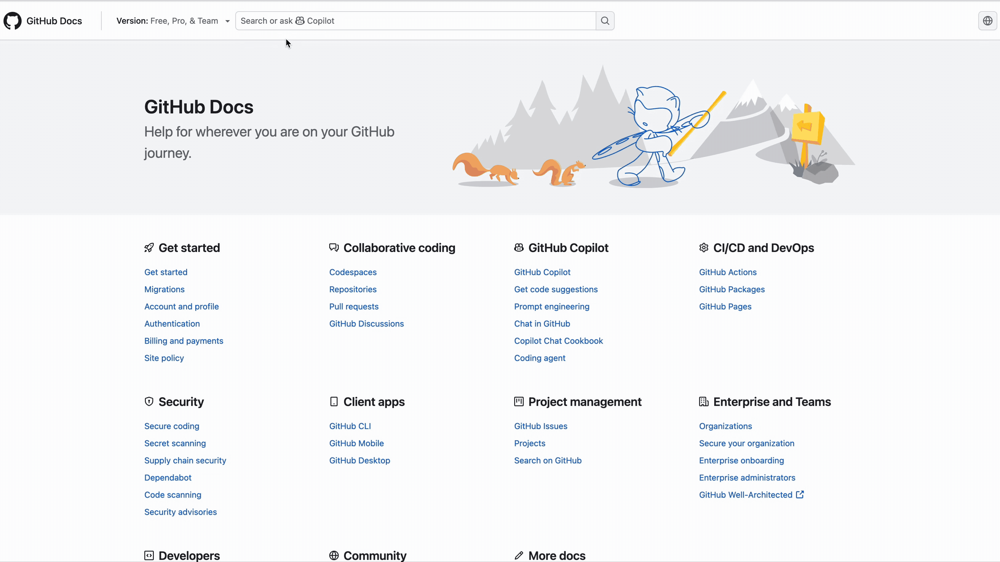
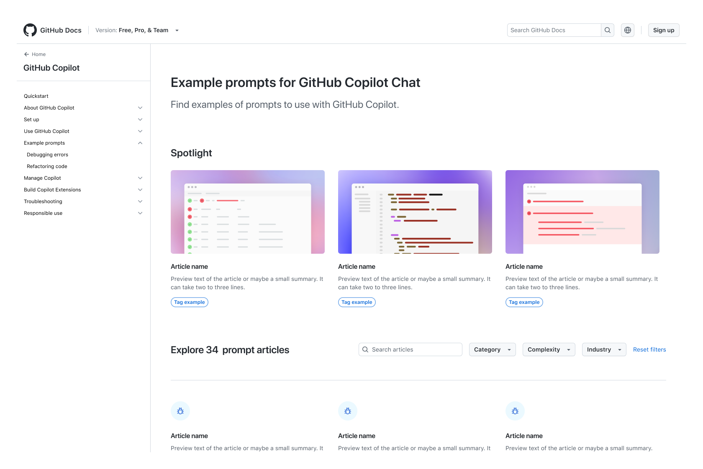

GitHub Docs
During June 2024 - May 2025 I was the lead designer on GitHub Docs. My favorite notable shift was adding Copilot Search in Docs. Promoting Copilot CLI with a Prompt Cookbook. And finally, refreshing the site's navigation, look and feel, and adding new page types.
Copilot search in Docs

Only a small amount of users arrive at a help article because they've clicked through they very tidy and well sorted links in our navigation. Usually they arrive through a direct link from a search engine, or if they're already on the documentation site, they click the search as soon as possible. Users would regularly see an overwhelming amount of results that weren't relevant.

Copilot search in GitHub Docs resolves this by offering relevant results in a dialog box with the option for users to choose a Copilot AI summary instead. Users are always able to view the entire list of results but our goal of getting the right information to users quickly was met.
Copilot Cookbook

Not every project on Docs was a huge end-to-end epic. The Copilot Cookbook was a fun, quick, project designed help promote GitHub Copilot use cases in an easy to digest format. I illustrated the thumbnails and introduced a simple search filter component for article hubs that was eventually standardized into the a new page type.
Docs Visual Refresh

Docs is a large team and there were 3 parallel efforts that eventually combined into a single project. We shipped all three:
1. Navigation link reorganization based on the findings of an in depth information architecture study 2. A visual refresh to comply with our new style guide and remove outdated illustrations and icons 3. Adding new page types to enable content writers to create tutorials and guides that requires multiple articles